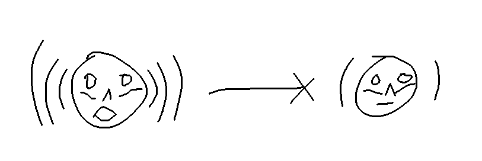

One widely cited anecdote portrays the unexpected ways of thinking and communication difficulties that appear when citwaz interact with more social species very well.
The drawing below was made during one particularly difficult interrogation of one of the suspects of a crime, of which this suspect happened to be citwaz, as a part of their explanation of the order of events as they recall them.

This was deduced to be an indication of the suspect's idea of the function of the word "sorry", as shown by the drawing of a shouting human face with an arrow pointing to a quiet human face with a closed mouth.
Their simple interpretation of it was effectively "the word that makes people quiet", no different from pressing the "volume down" button on some entertainment media device.
In effect, the suspect approached the victim and apologized with absolutely no knowledge of the events that unfolded just minutes before then, purely because they did not like how loud the victim was, and by the complete lack of awareness of what an apology is in the first place, let alone of the idea that it relates to past events, they accidentally implicated themselves in a crime they had nothing to do with.
Worth noting is that, despite this being a mistake, under the local cultural environment, it would actually true that, on average, under nearly any circumstances, approaching a loud human and apologizing will significantly decrease the volume of their voice, so the suspect's observation was not so much wrong as just a misunderstanding of the function of language.